I have amassed a respectable collection of retro-PCs in the several years I have been engaging in my retrocomputing hobby. As part of this hobby, I regularly acquire vintage expansion cards from others. Testing these newly-acquired cards will require me to frequently disassemble my properly set up retro-machines which is a hassle to do.
To reduce the repeated handling of these old and relatively fragile setups, I decided to embark on a project to build a modular vintage PC in the form factor of an open-frame testbench. This testbench setup will facilitate testing of vintage expansion cards as well as easy evaluation of vintage operating systems.
I decided to go with a Pentium 3 (P3)-based setup similar to my Tweener setup.
In this blog post, I will go through how I set up this hardware for dual-boot between DOS 6.22/Windows for Workgroups 3.11 and Windows 98SE plus the challenges I encountered while doing so.
What is a Pentium 3?
The P3 was first released by Intel in Feb 1999. It sports clock speeds from 400 Mhz to 1.4Ghz with a Front Side Bus (FSB) of 100 or 133 Mhz.
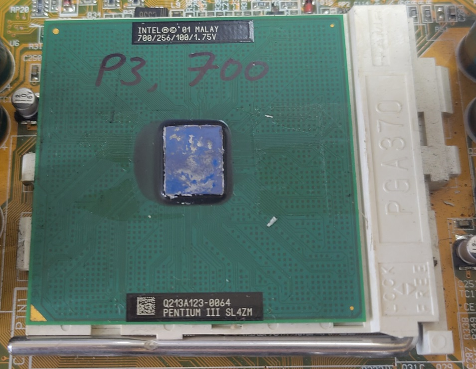It generally comes in 2 different package types, the Socket 370 as used by my system above and Slot 1. The P3 introduced Streaming SIMD Extensions (SSE) which enables the CPU to work on both floating-point and SIMD data at the same time compared to the previous SIMD effort, MMX.
System setup overview
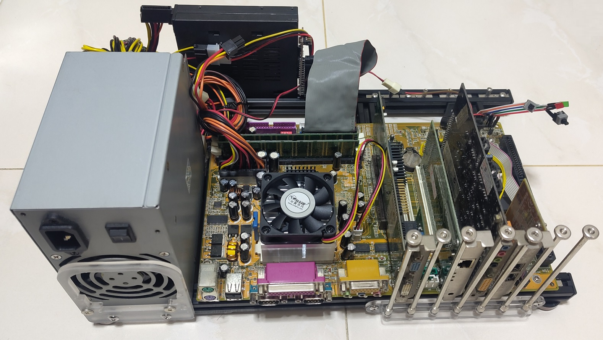The entire system is installed onto an ATX open frame purchased from Aliexpress.
- Intel Pentium III 700Mhz
- Transcend TS-AVE3/B motherboard
- VIA VT82C694X (Apollo Pro 133A) chipset
- VIA VT82C686B Southbridge
- VIA AC97-compatible integrated audio
- 1x AGP 4x, 5x PCI, 1x ISA
- 512MB PC133 SDRAM
- Storage
- 64GB SATA SSD
- Icydock 2.5" Dock Trayless Hot-Swap SATA
- Startech IDE-SATA converter
I used this motherboard as it comes with AGP, PCI and ISA slots which will enable me to test a variety of vintage expansion cards.
512MB RAM is installed as it’s the maximum that Windows 98 will allow for initial boot. More RAM is supported by the motherboard and Windows 98 system files can be modified but that does not provide any additional benefit in my opinion.
For storage, I opted to use a modern SATA SSD. The modern SATA SSD provides fast access performance without relability concerns of aging magnetic IDE hard drives. I installed the SSD into a SATA dock to allow easy swapping of storage hardware to easily test multiple operating systems.
The SATA interface is converted to IDE using a Startech IDE-SATA converter, one of the more reliable converters in the market. I don’t mind paying more for a quality adapter since this is just a single setup.
Expansion cards
I used 3 expansion cards to provide graphics, sound and network.
Matrox G550 32MB AGP graphics card
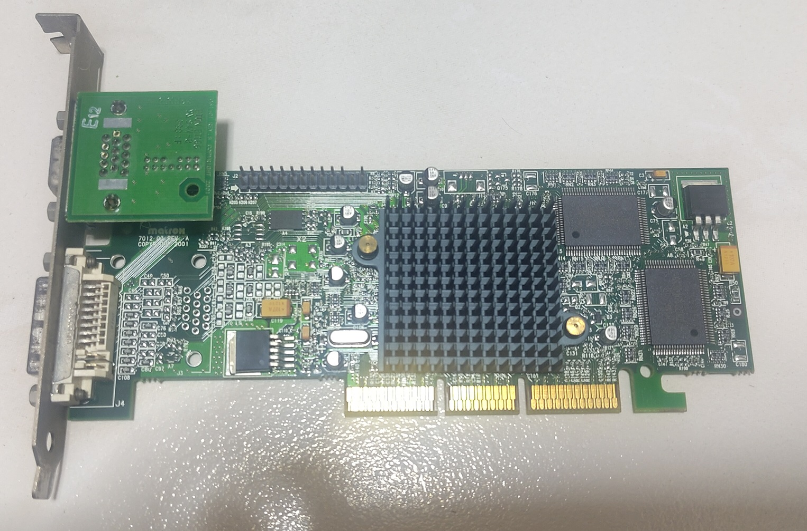I used a Matrox graphics card in this system as Matrox is known for their excellent 2D image quality as well as driver stability compared to other vendors of that time. Since I do not intend to game extensively on this system and need a stable test setup, a Matrox card is suitable for this.
It also comes with a DVI port which was still relatively new for that time. This DVI port can be trivially converted to HDMI with a passive adapter and is useful for connecting to modern monitors or video-capture devices with no loss of video quality.
Creative Sound Blaster Live 5.1 PCI sound card
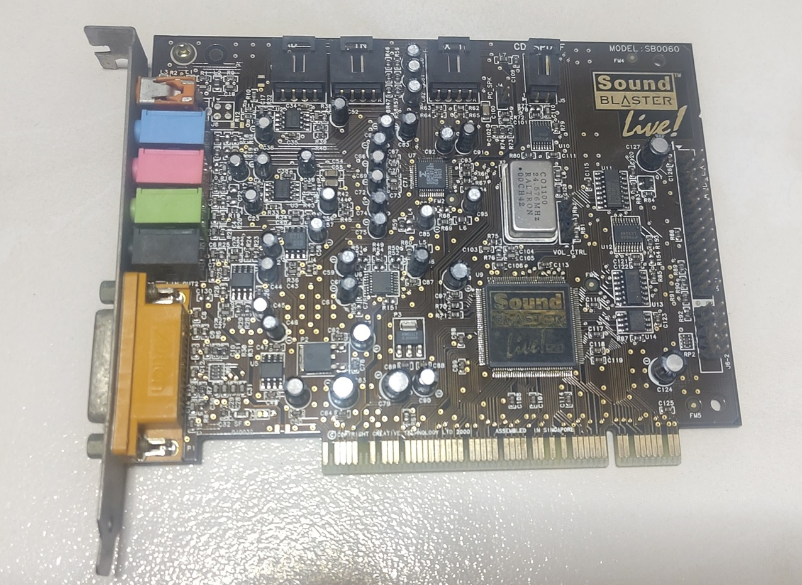The motherboard comes with integrated AC97 audio but I wanted better sound quality and performance. I opted for Creative Sound Blaster Live. I used this card as it’s among the more period-correct sound cards for a system of this vintage.
It comes with Environmental Audio Extensions (EAX) 2.0 which provides 3D audio for many games that support this feature.
If you are wondering why I did not install an ISA sound card for DOS gaming, it was because I already have dedicated retro-setups for that purpose. I wanted to keep the sole ISA slot on this motherboard free for testing. In a later section, I will go through the configuration I used to emulate an ISA Sound Blaster.
3Com 3C905 PCI 100 Mbps network card
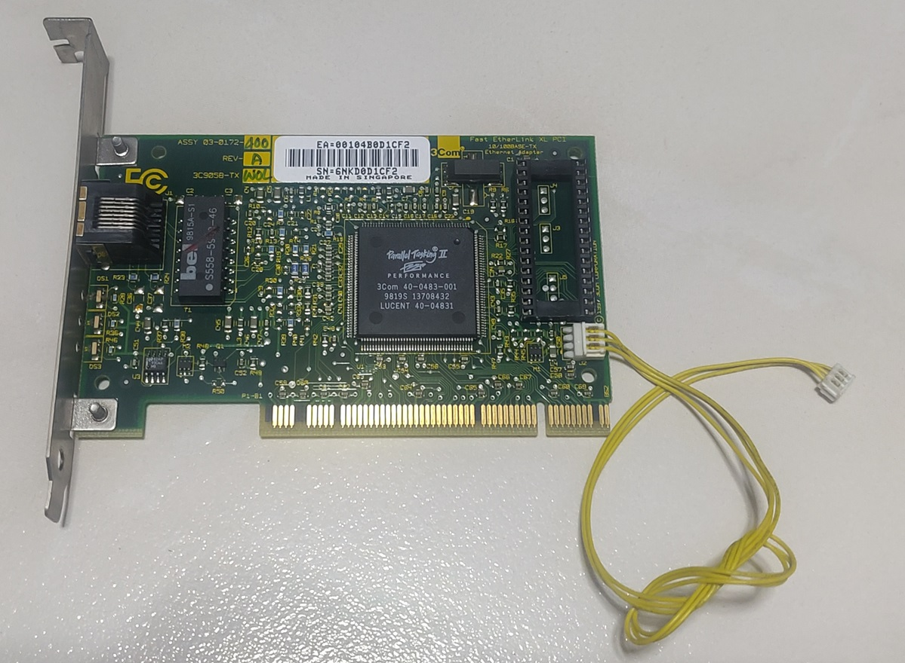Most consumer motherboards of that era do not come with Ethernet ports by default and this is no exception. I used this 3Com card as it comes with driver support from Win 9x going all the way back to Win 3.x plus DOS packet drivers.
This 3Com card comes with a Wake-on-LAN (WOL) cable which is supported by the motherboard as well.
Operating Systems
I dual-boot 2 operating systems in this setup.
| DOS 6.22/Windows for Workgroups 3.11 | Windows 98SE |
|---|---|
| 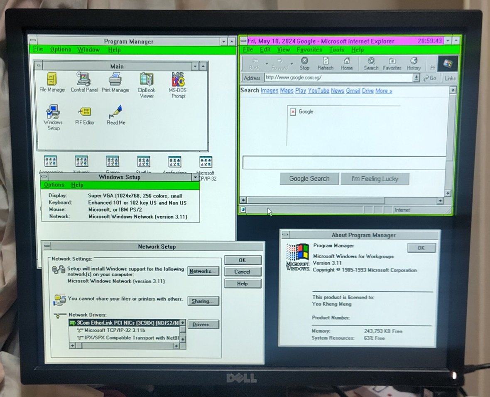 | 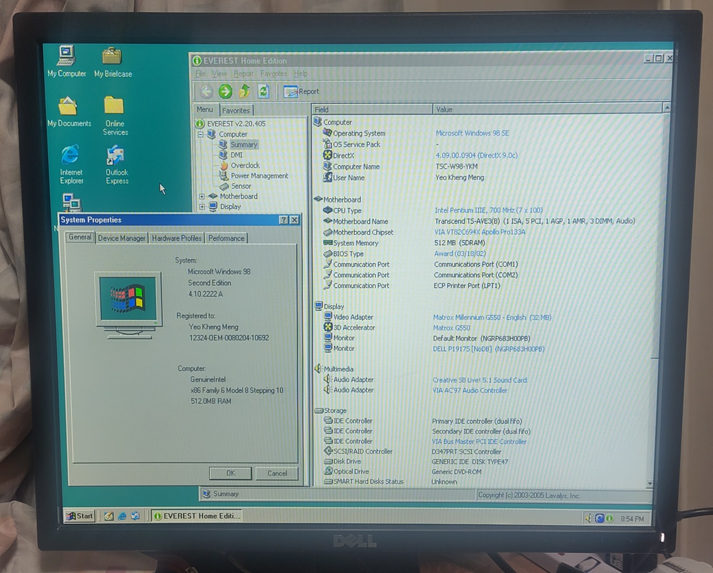 |
DOS 6.22 + Windows for Workgroups 3.11 is used for a “purer” DOS and 16-bit test environment.
Windows 98 Second Edition to me is the best retro Windows OS for reliability while still maintaining good DOS support.
Both OSes are installed on separate primary partitions which presents additional challenges as these OSes were not designed to multi-boot in this way.
Why I chose a Pentium 3 system?
The choice of a P3 setup for this test bench was a deliberate one by me.
Compared to a newer Pentium 4 system:
- P3 motherboards are among the last to commonly have ISA slots
- Lower CPU power usage -> Smaller and less noisy CPU fan in an open setup
- 100 Mhz FSB for better compatibility as some PCI cards don’t support faster FSB like 3dfx Voodoo 1 graphics
- Better Windows 98 driver support
Compared to Pentium 2:
- Faster performance and more period correct
Hardware challenges
Dealing with decades-old computer hardware presents many challenges not seen on more modern systems.
Bulging/leaky motherboard capacitors
When I first obtained this motherboard, many of the capacitors were bulging and some were leaking. Out-of-spec or leaky capacitors are bad for the system as they may corrode the motherboard PCB as well as cause system instability.
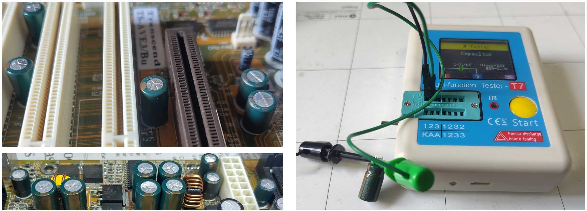Spot the bulging and leaky caps. The meter measures a capacitor at just a tenth of its rated value.
The root cause of this issue is explained in Wikipedia:
The capacitor plague was a problem related to a higher-than-expected failure rate of non-solid aluminium electrolytic capacitors between 1999 and 2007, especially those from some Taiwanese manufacturers, due to faulty electrolyte composition that caused corrosion accompanied by gas generation; this often resulted in rupturing of the case of the capacitor from the build-up of pressure.
Therefore, I opted to replace most of the aluminium electrolytic capacitors even if those that did not show an visible signs (yet) of being faulty.
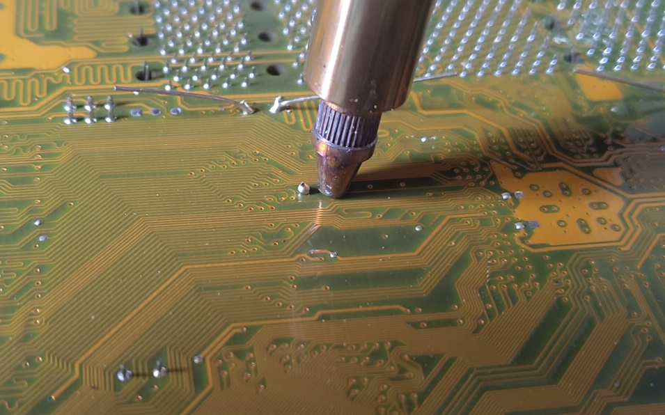I used a dedicated through-hole desoldering tool to help me with this. It comes with a heated tip with integrated air suction pump to remove the solder.
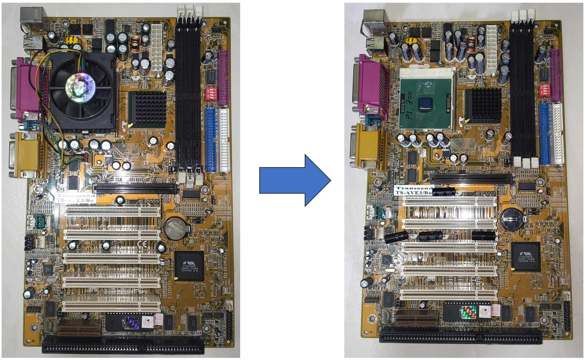Most of the aluminium electrolytic capacitors are now replaced with newer components. Some of the capacitors I ordered were slightly too tall to be placed near the PCI slots so I folded them down.
These replacements should give the motherboard more decades of service.
Broken 12V rail on motherboard
When I started using the motherboard, I was initially perplexed why the CPU fan did not work. There was also no sound from the Sound Blaster Live.
After some troubleshooting, I would narrow the fault to a possible problem on the 12V rail on the motherboard. The power supply was still providing 12V just fine.
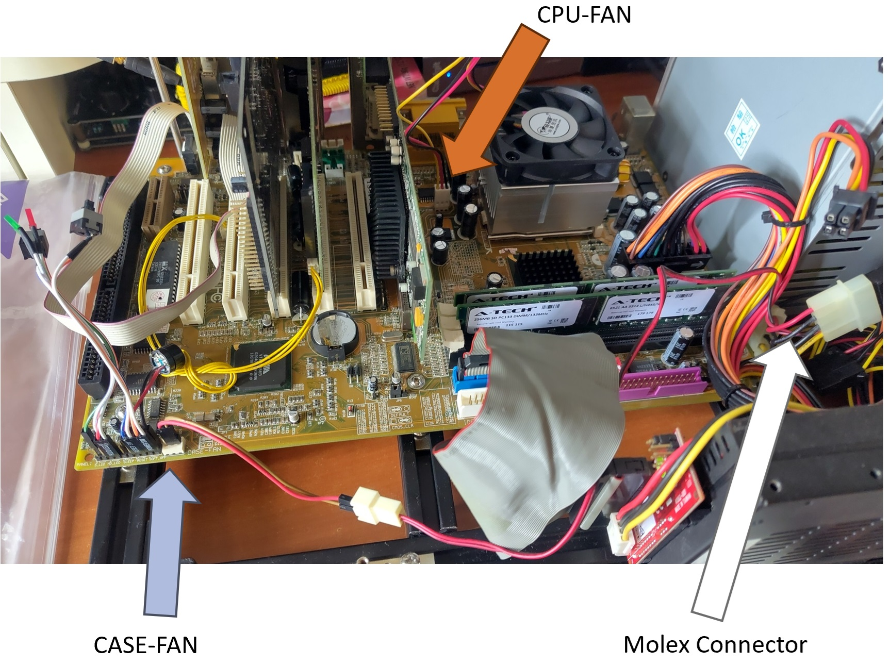Since there is no easy way for me pinpoint the source of the failure, as a workaround, I injected 12V from an unused Molex connector into the CASE-FAN connector. In essence, powering the 12V rail from the unused fan connector.
Sound Blaster Live and VIA chipset compatibility
During the process of installing the SB Live drivers, Win 98 would hang or blue screen. I cannot boot to the desktop after a power cycle. Attempting to run DOS drivers to initialise the SB Live will also produce a similar result and the system could lockup.
Searching online yielded this forum post on Vogons:
Creative’s engineers used a number of features in Intel’s PCI implementation that were not strictly in the PCI spec. Via only implemented the spec. … Generally the advice was avoid the combination of Via 686A/B southbridges and Creative SBLive/Audigy cards…
Bottom line was that interrupt line sharing failed to work. … there are 4 interrupts on a PCI bus like this. Each slot is connected to one of them, as are the integrated PCI devices (i.e. IDE, USB and audio) and the AGP slot. If you’re lucky one PCI slot won’t be shared with any of that.
Source: https://www.vogons.org/viewtopic.php?p=1081307#p1081307
So the only solution is to trial and error different PCI slots for SB Live. This cost me so much time where I initially thought there was a hardware failure somewhere.
OS and Software Setup
Now with the hardware problems solved, we can go to setting up the OS and software.
Dual boot challenges
Dual-booting between DOS 6.22/Windows for Workgroups 3.11 and Windows 98SE presents many challenges due to the following limitations:
- DOS and Win 98 Setup will only install to the first primary partition
- DOS and Win 98 must boot from a primary partition
- Microsoft Fdisk partitioning tool cannot create >1 primary partition
To setup a dual-boot system under the above limitations will require an interesting approach to.
The drivers and configuration files I used for this system can be found here: https://github.com/yeokm1/retro-configs/tree/master/desktops/open-frame-pc/
Dual-boot install approach
I used the following partition layout to keep both OSes plus my data isolated.
| Type | Size | File System | Purpose |
|---|---|---|---|
| Primary | 2GB | FAT16 | DOS 6.22 |
| Primary | 26GB | FAT32 | Win 98 |
| Extended | 32GB | - | - |
| - Logical | 32GB | FAT32 | Data |
- Partition using FreeDOS Fdisk which can create multiple primary partitions. 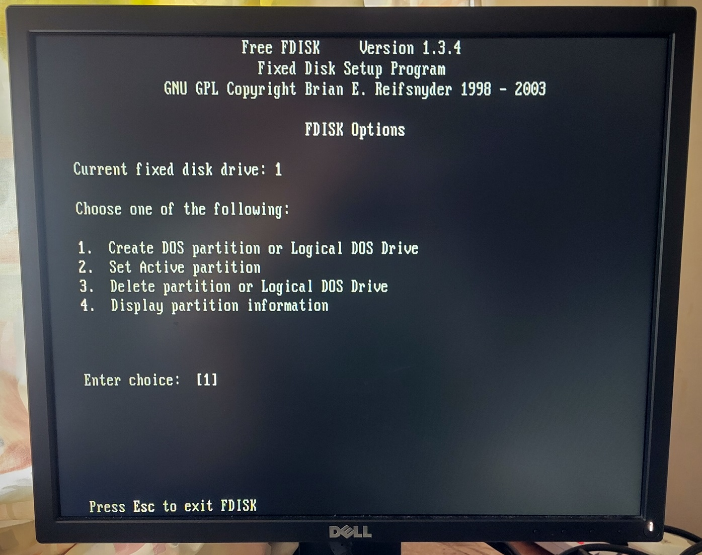
- Install DOS 6.22 into first primary partition
- Use Grub4DOS to hide the first primary partition and make second primary partition active 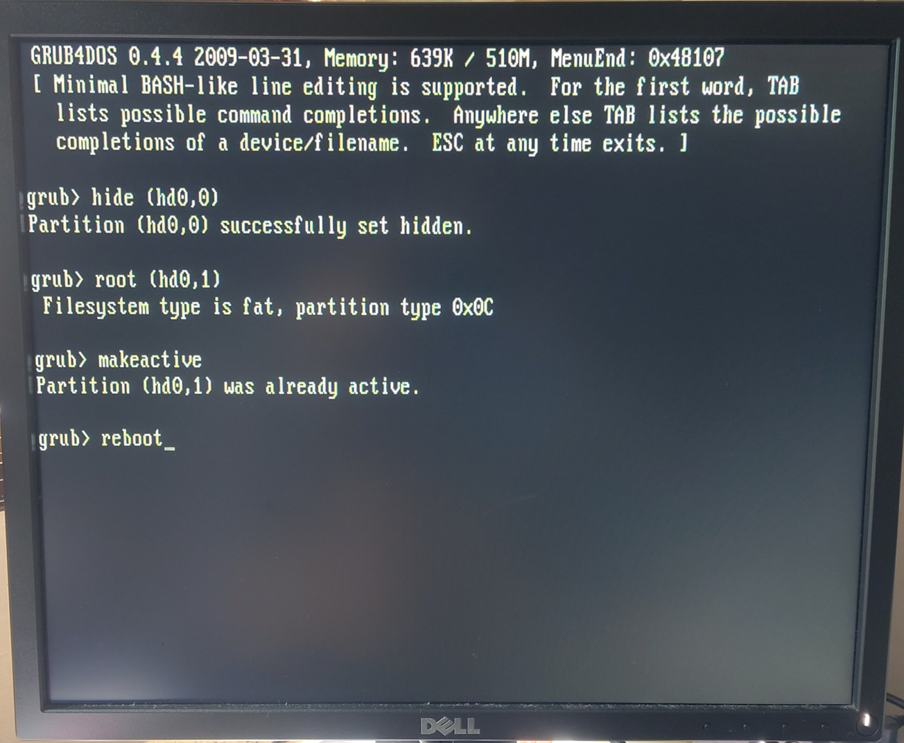
- hide (hd0,0)
- root (hd0,1)
- makeactive
- Install Win 98 to second primary partition
- Use Grub4DOS to unhide first primary partition
Reference: https://retropcbuilder.blogspot.com/2016/11/dual-booting-ms-dos-622windows-31-and.html
Switching between DOS 6 and Win 98
After installing both OSes, there is a need to easily switch between both. To accomplish this, I add an option to both the DOS 6.22 and Win 98 boot menu through their respective config.sys and autoexec.bat files.
The Win 98 boot menu containing an option to invoke Grub4DOS to switch to DOS 6.22.
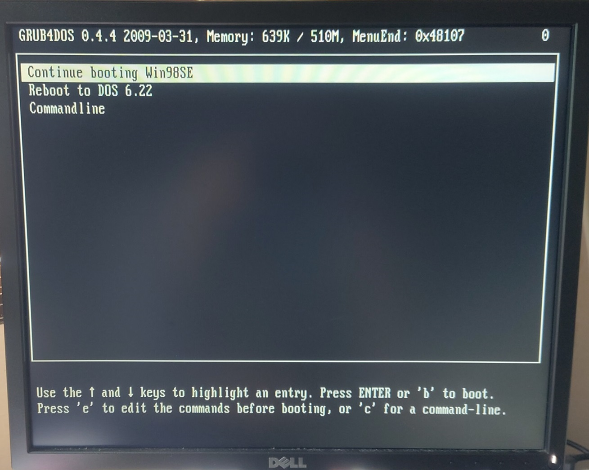I have a Grub4DOS configuration to confirm the reboot to DOS 6.22.
- root (hd0,0)
- makeactive
- reboot
Reference: https://retropcbuilder.blogspot.com/2016/11/dual-booting-dos-and-windows-95-follow.html
Sound Blaster compatibility for DOS games
As I’m using a PCI sound card, this would mean DOS games by default would not be able to output sound as they expect ISA sound cards.
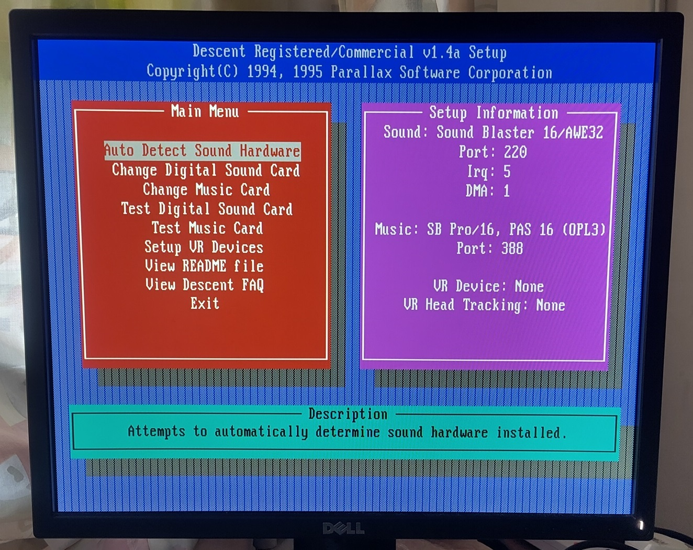Descent setup displaying the common ISA Sound Blaster parameters.
In order to have sound work for DOS games, either I can install an ISA sound card or I use a DOS Terminate-and-stay-resident (TSR) program to hook onto these ISA addresses and redirect to PCI-sound-card’s actual address.
Since I need the motherboard’s sole ISA slot for test purposes, I opted for the TSR approach.
Option 1: TSR to redirect to AC97 (VIADOS)
This first option uses the onboard integrated AC97 audio.
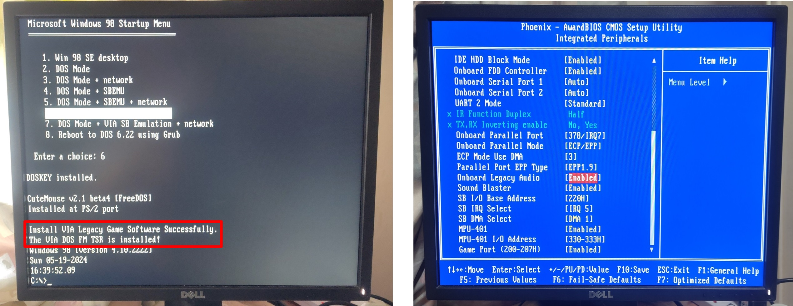The TSR VIADOS provided by VIA allows Sound Blaster Pro emulation when paired together with the BIOS settings.
I found the digital sound effect emulation to be pretty good although the OPL music emulation wasn’t as good with regular crackles in the output.
Option 2: TSR to redirect to SB Live (SBEMU)
Another option is to use a modern tool called SBEMU that was first released only in 2023!
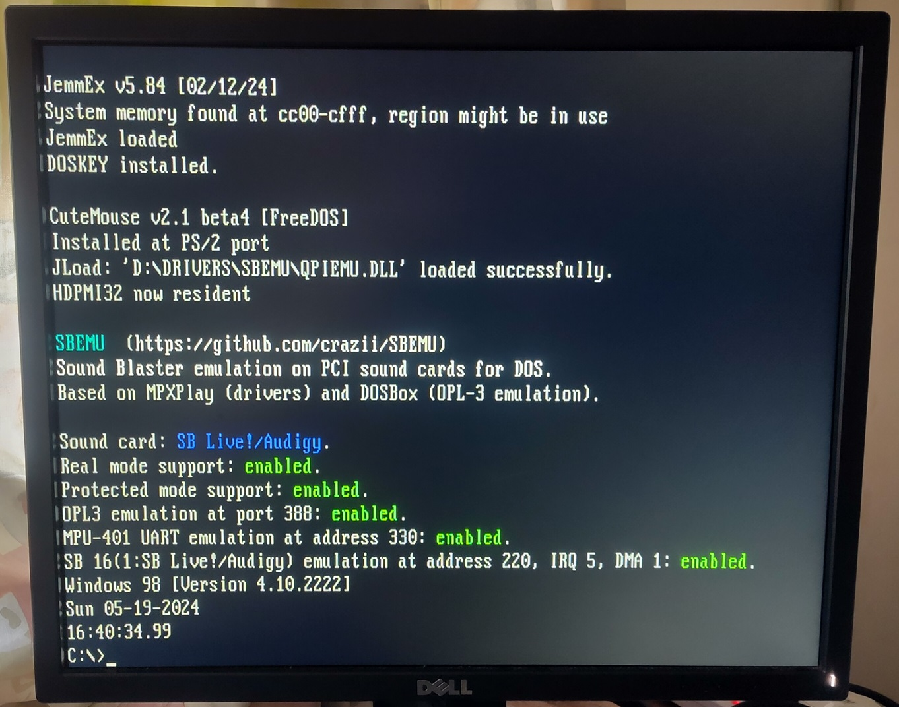It supports up to Sound Blaster 16 emulation over many newer sound chips SB Live/Audigy, Intel HDA, C-Media, Ensoniq etc. Kudos to the author for making such an impressive program!
I found the OPL music emulation to be very good. The digital sound effect emulation had a slightly higher pitch but still entirely acceptable.
VIA AC97 drivers override SBLive drivers in DirectX
As I had both sound devices AC97 and SBLive enabled, my initial plan was to install the drivers for both devices. After installing the VIA WDM Audio drivers, I discovered the SBLive VxD will not work in DirectX applications like games. The DirectX applications kept outputing to AC97 which I did not want.
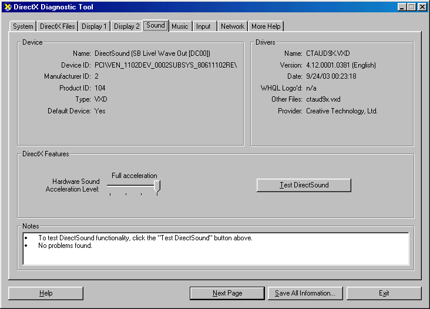SBLive VxD drivers used by DirectX
VxD vs WDM
VIA only provides WDM drivers for their integrated AC97 sound system wheareas Creative provides both VxD and WDM drivers for their sound devices.
I had to look into the differences between VxD and WDM and this is a brief summary:
-
VxD - Virtual xxx Driver
- Introduced in Windows 3.x, not used after Windows ME
- Raw access to memory and hardware -> Faster performance
- Less stable
-
WDM – Windows Driver Model
- Introduced in Windows 98, used till present
- Driver isolation for a certain hardware feature (modularity)
- Designed for better forward Windows compatibility
- More stable
According to Phil’s Computer Lab:
(On Windows 98) … don’t use the WDM drivers, they are slower and have issues with games. VXD drivers are fast and bugfree with DirectSound3D and EAX technology.
Source: https://www.philscomputerlab.com/sound-blaster-live.html
Based on my observations, these are my suspected causes:
- DirectX prefers WDM drivers if available
- Creative VxD installation after VIA WDM drivers cannot “dislodge” the VIA drivers
Sound Solution
To solve this issue and to make sure I have the latest drivers, I referenced a Vogons post and used their provided SB Live Driver CD image.
I followed these steps in this specific order:
- Don’t install VIA AC97 drivers
- Disable AC97 in Device Manager
- Install DirectX 9.0c
- Install provided SB Live drivers
- Install motherboard drivers
- Install graphics and other drivers
AC97 Audio device disabled with installed SBLive drivers
Conclusion
Setting up a vintage computer is a challenging process and demands more technical knowledge than for a more modern system. Systems are a lot more mature today then decades ago.
It’s much harder to find troubleshooting information due to age as well as a smaller installed base of computers then.
It was an interesting journey and I hope the information I have documented here can prove useful to anyone else who face similar issues.
Embedded below is the presentation I gave at Hackware v8.2 meetup.


{kind=link}
{kind=link}
{kind=link}
{kind=link}
{kind=link}
{kind=link}
{kind=link}
{kind=link}
{kind=link}
{kind=link}
{kind=link}
{kind=link}
{kind=link}
{kind=link}
{kind=link}
{kind=link}
{kind=link}
{kind=link}
{kind=link}
{kind=link}